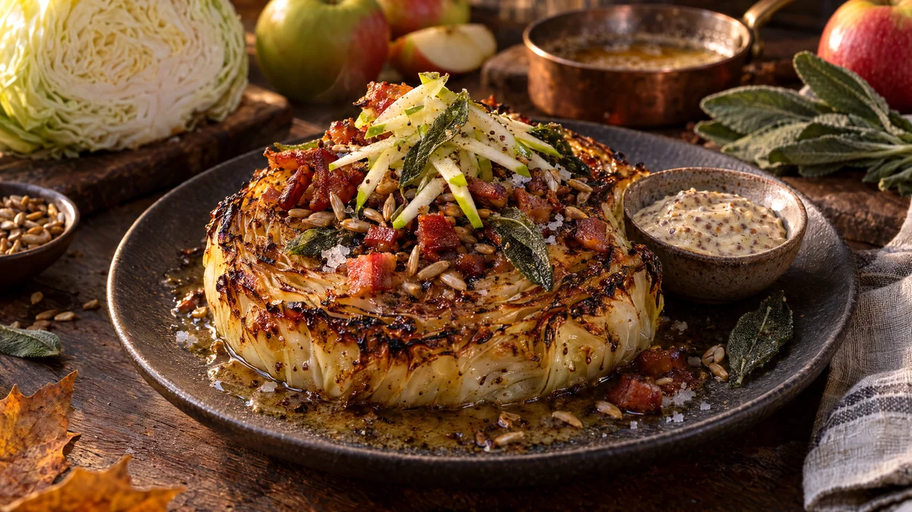

RESTFEST · RECEPTHuvudrätt · Tillbehör
Rostade vitkålsbiffar med brynt smör, bacon och äpple
Ett vitkålshuvud, ett paket bacon och ett äpple ur fruktskålen. Tjocka skivor vitkål rostas tills kanterna karamelliseras och mitten blir söt och mjuk. Ovanpå: nötigt brynt smör, krispigt bacon, frasig salvia och friska äppelstickor. Rustikt, gyllene och oväntat elegant.
- Förberedelse
- 15 min
- Tillagning
- 40 min
- Portioner
- 4
- Nivå
- Medelsvårt
 Det här behöver du
Det här behöver du
JÄMFÖRT MED DIN KYL
Tryck på + vid det du behöver köpa.
Kålbiffar
Topping
Senapskräm (valfritt)
Gör så här
- Sätt ugnen på 225 grader. Ta bort de yttersta bladen från kålen.
- Lägg kålhuvudet på sidan och skär det genom stocken i 4 skivor, ca 2,5 cm tjocka. Stocken håller ihop bladen, så skär inte bort den. Spara ändbitarna till coleslaw eller soppa.
- Lägg skivorna på en plåt med bakplåtspapper. Pensla dem med olja på båda sidor och strö över salt, peppar och kummin.
- Rosta i mitten av ugnen i 20 minuter. Vänd skivorna försiktigt med en bred stekspade. Rosta 15–20 minuter till, tills mitten är mjuk när du sticker i en kniv och kanterna är mörkt gyllenbruna.
- Skär baconet i bitar, ca 1 cm. Stek det i en torr stekpanna på medelvärme i 6–8 minuter tills det är krispigt. Lyft upp det på hushållspapper. Rosta fröna eller nötterna i baconfettet i 1–2 minuter och lägg dem bredvid baconet.
- Kärna ur äpplet och skär det i tunna stickor, ca 3 mm. Vänd stickorna i citronsaft så att de inte mörknar.
- Rör ihop crème fraiche, senap och honung till senapskrämen.
- Bryn smöret sist, så att det är varmt när du lägger upp. Smält smöret i en liten kastrull med ljus botten på medelvärme. Det skummar först och klarnar sedan. Rör då och då. Efter 4–6 minuter blir det gyllenbrunt med bruna prickar i botten och doftar hasselnöt. Ta genast av kastrullen från värmen, brynt smör går fort från brunt till bränt.
- Lägg salviabladen i det heta smöret. De fräser och blir krispiga på 20–30 sekunder.
Dekoration och servering
- Lägg en kålbiff på varje tallrik med den mest karamelliserade sidan upp.
- Skeda det brynta smöret över, med de bruna prickarna, och lägg de krispiga salviabladen ovanpå.
- Strö över bacon och frön, och toppa med en liten hög äppelstickor så att det gröna syns.
- Avsluta med flingsalt. Servera senapskrämen i en liten skål bredvid.
- Servera som huvudrätt med kokt potatis eller bröd, eller som tillbehör till fläskkotlett eller korv.
Mått och ugnstemperaturer
Måtten är svenska (dl, msk, tsk, krm). Ugnstemperaturerna gäller vanlig ugn med över- och undervärme; med varmluft, sänk med 20 grader.